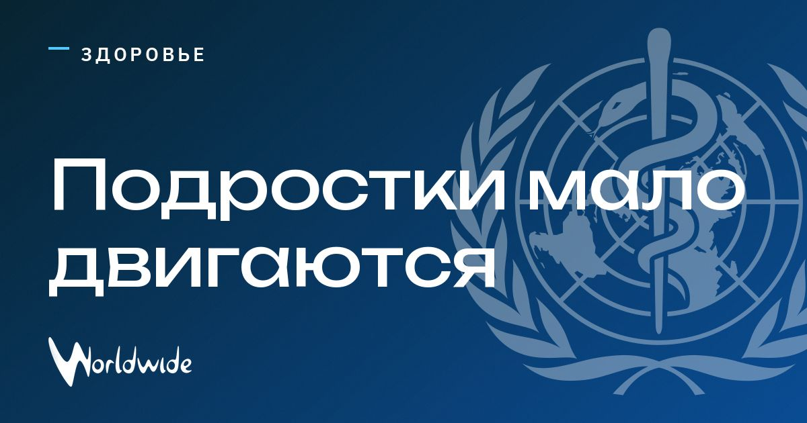

ВОЗ: подростки не стали больше двигаться за 15 лет

Около 240 млн подростков ни в один день недели не занимались физической активностью хотя бы час.
Исследование ВОЗ, опубликованное в The Lancet Global Health, показывает: за 15 лет глобальный уровень активности почти не изменился. Девочки почти во всех изученных странах активны меньше мальчиков.
Источники: RFI, Tagesschau Wissen, Health Policy Watch, Dnevnik Slovenia, Gulf News, G4Media